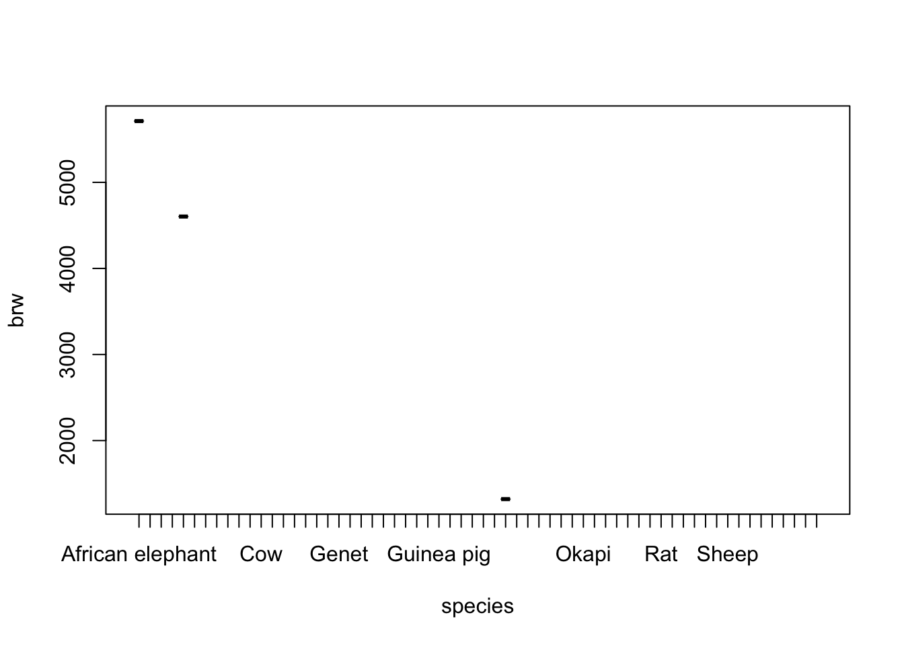

![]()
vec1 <- c(1, 2, 3, 4, 5, 6)
vec2 <- c("A", "B", "C", "D", "E", "F")Data Management
Hoorcollege 3 juni 2025
Vandaag gaan we dwars door R heen om ons snel bekend te maken met de onderliggende machinery van het systeem. We gaan leren hoe je data inleest in R, hoe je het exporteert en hoe je de data gaafmaakt voor verdere analyse. In de breedste zin zullen we vandaag al leren hoe je op een efficiente wijze dwars door environments, frames en data containers heen kunt gaan om uiteindelijk de data op een juiste manier te managen. De slides voor het hoorcollege kun u hier vinden
Vandaag beginnen we met het overgebleven deel van het werkcollege van gisteren. Als je het werkcollege van gisteren al hebt afgerond, dan kun je Practical 1 van vandaag overslaan en direct beginnen met Practical 2 en het extra practical doen.
Practical 1
Exercise 1-5
- Make two vectors: one named
vec1with values 1 through 6 and one namedvec2with letters A through F.
To create a vector we used c(), which stands for ‘concatenation’. It is just a series of numbers or letters.
- Create two matrices, one from
vec1and one fromvec2. The dimensions for both matrices are 3 rows by 2 columns.
mat1 <- matrix(vec1, nrow = 3, ncol = 2)
mat2 <- matrix(vec2, nrow = 3, ncol = 2)To create a matrix we used matrix(). For a matrix we need to specify the dimensions (in this case 3 rows and 2 columns) and the input (in this case vec1 or vec2) needs to match these dimensions.
- Inspect your vectors and matrices. Are all numerical?
vec1[1] 1 2 3 4 5 6vec2[1] "A" "B" "C" "D" "E" "F"mat1 [,1] [,2]
[1,] 1 4
[2,] 2 5
[3,] 3 6mat2 [,1] [,2]
[1,] "A" "D"
[2,] "B" "E"
[3,] "C" "F" vec1 and mat1 contain numbers and vec2 and mat2 contain characters.
- Make a matrix from both
vec1andvec2with 6 rows and 2 columns. Inspect this matrix.
mat3 <- matrix(c(vec1, vec2), 6, 2) # specify rows and column dimensions
mat3 [,1] [,2]
[1,] "1" "A"
[2,] "2" "B"
[3,] "3" "C"
[4,] "4" "D"
[5,] "5" "E"
[6,] "6" "F" or
mat3b <- cbind(vec1, vec2) # no dimension specification necessary
is.matrix(mat3b)[1] TRUEmat3b vec1 vec2
[1,] "1" "A"
[2,] "2" "B"
[3,] "3" "C"
[4,] "4" "D"
[5,] "5" "E"
[6,] "6" "F" If one or more elements in the matrix represent characters, all other elements are also converted to characters. A matrix is just for either numeric or character elements. Notice that the second approach (the column bind approach from mat3b) returns a matrix where the column names are already set to the name of the bound objects.
To solve the problem of charactered numbers we can create a dataframe. A dataframe is essentially a matrix that allows for character elements. The use of a dataframe is often preferred over the use of a matrix in R, except for purposes where pure numerical calculations are done, such as in matrix algebra. However, most datasets do contain character information and a dataframe would normally be your preferred choice when working with your own collected datasets in R.
- Make a dataframe called
dat3wherevec1andvec2are both columns. Name the columnsV1andV2, respectively. Use functiondata.frame().
dat3 <- data.frame(V1 = vec1, V2 = vec2)
dat3 V1 V2
1 1 A
2 2 B
3 3 C
4 4 D
5 5 E
6 6 FExercise 6-10
- Again, make a dataframe called
dat3bwherevec1andvec2are both columns. Name the columnsV1andV2, respectively. Use functionas.data.frame()on the matrix obtained fromQuestion 4.
This is a tricky situation. At face value, everything may seem to be in order. But, be aware that the code
dat3b <- as.data.frame(mat3, stringsAsFactors = TRUE)
dat3b V1 V2
1 1 A
2 2 B
3 3 C
4 4 D
5 5 E
6 6 Fdoes not work properly (at least not as intended) as the matrix nature of mat3 turned everything into a character value and you have lost the numerical nature of vec1. It may appear to be working, but if we check if column 1 is numerical, it turns out not to be the case.
- Check if the first column in the data frames from Question 4 and Question 5 are indeed numeric. If not, determine what they are.
is.numeric(dat3[, 1])[1] TRUEis.numeric(dat3b[, 1])[1] FALSEThe first column in matrix dat3b obtained from Question 5 is indeed not numeric. As a matter of fact, it is also not a character variable.
is.character(dat3b[, 1])[1] FALSERather tricky; the function as.data.frame() has converted the first variable to a factor.
is.factor(dat3b[, 1])[1] TRUEThis is due to us not specifying the variable correctly in the matrix we used to create the dataframe. Factors are categorical variables that are depicted by numbers. Character vectors are not converted to factors in data frames by default, but the argument stringsAsFactors = TRUE has resulted in this conversion. I forced this to prove a point: You now know that there is a distinction between characters and factors and you know hot to force this conversion to factors in a data frame.
- Select 1) the third row, 2) the second column and 3) the intersection of these two in the dataframe
dat3that you have created in Question 4.
dat3[3, ] #3rd row V1 V2
3 3 Cdat3[, 2] #2nd column[1] "A" "B" "C" "D" "E" "F"dat3$V2 #also 2nd column[1] "A" "B" "C" "D" "E" "F"dat3[3,2] #intersection[1] "C"The [3,2] index is very useful in ‘R’. The first number (before the comma) represents the row and the second number (after the comma) represents the column. For a vector there are no two dimensions and only one dimension can be called. For example, vec1[3] would yield 3. Try it.
Columns can also be called by the $ sign, but only if a name has been assigned. With dataframes assigning names happens automatically.
Note that R automatically reports the values the character column can take. This means that the column is indeed a factor (a categorical variable - as it is supposed to be). A useful function to inspect the structure of a dataframe is str(). Try running it.
str(dat3)'data.frame': 6 obs. of 2 variables:
$ V1: num 1 2 3 4 5 6
$ V2: chr "A" "B" "C" "D" ...Inspecting the structure of your data is vital, as you probably have imported your data from some other source. If we, at a later stage, start analyzing our data without the correct measurement level, we may run into problems. One problem that often occurs is that categorical variables (factors in R) are not coded as such.
- Imagine that the first variable
V1in our dataframedat3is not coded correctly, but actually represents grouping information about cities. Convert the variable to a factor and add the labels Utrecht, New York, London, Singapore, Rome and Cape Town.
dat3$V1 <- factor(dat3$V1, labels = c("Utrecht", "New York", "London", "Singapore", "Rome", "Capetown"))
dat3 V1 V2
1 Utrecht A
2 New York B
3 London C
4 Singapore D
5 Rome E
6 Capetown FPractical 2: Pipes
We need the following packages for this part:
library(dplyr) # for data manipulation
Attaching package: 'dplyr'The following objects are masked from 'package:stats':
filter, lagThe following objects are masked from 'package:base':
intersect, setdiff, setequal, unionlibrary(magrittr) # for flexible pipes
library(haven) # for importing SPSS and Stata data
library(mice) # for the boys data
Attaching package: 'mice'The following object is masked from 'package:stats':
filterThe following objects are masked from 'package:base':
cbind, rbind- Read in the SPSS and Stata data sets that are provided on Moodle. Place them in the Project folder of this practical. Use the functions
read_sav()andread_dta()from packagehaven.
library(haven) # for importing SPSS and Stata data
# Import the SPSS data set
spss_data <- read_sav("SUR_2023_LAPOP_AmericasBarometer_v1.0_w_orginal.sav")
# Import the Stata data set
stata_data <- read_dta("03-poverty-analysis-data-2022-rt001-housing-plus.dta")- Use a pipe to do the following:
- draw 1000 values from a normal distribution with
mean = 5andsd = 1- \(N(5, 1)\), - create a matrix where the first 500 values are the first column and the second 500 values are the second column
- make a scatterplot of these two columns
If you’d like the same results as I have obtained, you can fix the random seed
set.seed(123)rnorm(1000, 5) %>%
matrix(ncol = 2) %>%
plot()
- On the
03-poverty-analysis-data-2022-rt001-housing-plus.dta: Use a pipe to calculate the correlation matrix on the continuous variables only. Round the result to two decimal places.
cor_stata <- stata_data %>%
as_factor() %>% # first make sure that factors are factors
select(where(is.numeric)) %>% # select only numeric variables
cor(use = "pairwise.complete.obs") # use all info from complete pairsWarning in cor(., use = "pairwise.complete.obs"): the standard deviation is
zero- What is the maximum correlation in the correlation matrix? Exclude the value
1and-1in your calculations. # which is the maximum correlation in the correlation matrix? # first, set the diagonal to zero -> these values are all 1 diag(cor_stata) <- 0 cor_stata[cor_stata == 1 | cor_stata == -1] <- NA # set 1 and -1 to NA, as these are not interesting # calculate the maximum correlation max_cor_value <- max(cor_stata, na.rm = TRUE) # there are NAs in cor_stata which_max <- which(cor_stata == max_cor_value, arr.ind = TRUE) # get the indices of rows and columns which_max
We can see that the pairs `fortnight, hhid` and `CPI_2017_22, CPI_june2022` have the highest correlation of 0.9996074.
::: {.cell}
```{.r .cell-code}
stata_data %>%
select(fortnight, hhid) %>%
cor(use = "pairwise.complete.obs") fortnight hhid
fortnight 1.0000000 0.9996074
hhid 0.9996074 1.0000000:::
Sneak peek for tomorrow
We can also select only variables that belong to a specific set of items, such as q13 in the STATA data set. This is done by selecting only variables that start with q13 using the starts_with() verb:
cor_stata <- stata_data %>%
as_factor() %>% # first make sure that factors are factors
select(where(is.numeric)) %>% # select only numeric variables
select(starts_with("q13")) %>% # select only variables that start with q13
cor(use = "pairwise.complete.obs") # use all info from complete pairs
diag(cor_stata) <- 0
# calculate the maximum correlation
max_cor_value <- max(cor_stata, na.rm = TRUE) # there are NAs in cor_stata
which_max <- which(cor_stata == max_cor_value,
arr.ind = TRUE) # get the indices of rows and columns
which_max row col
q13_19 4 3
q13_18 3 4- Now use a pipe to calculate the correlation for the pair (
x4,y4) on theanscombedata set
Using the standard %>% pipe:
anscombe %>%
subset(select = c(x4, y4)) %>%
cor() x4 y4
x4 1.0000000 0.8165214
y4 0.8165214 1.0000000Alternatively, we can use the %$% pipe from package magrittr to make this process much more efficient.
anscombe %$%
cor(x4, y4)[1] 0.8165214- Have a look at the
boysdata set from packagemice(don’t forget tolibrary(mice)). Use a pipe to calculate the correlation betweenhgtandwgtin theboysdata set from packagemice.
Because boys has missing values for almost all variables, we must first select wgt and hgt and then omit the rows that have missing values, before we can calculate the correlation. Using the standard %>% pipe, this would look like:
mice::boys %>% # mice::boys tells us that boys comes from package mice
select(wgt, hgt) %>%
cor(use = "pairwise.complete.obs") wgt hgt
wgt 1.0000000 0.9428906
hgt 0.9428906 1.0000000which - because there are only two variables - is equivalent to
boys %>%
select(wgt, hgt) %>%
na.omit() %>%
cor() wgt hgt
wgt 1.0000000 0.9428906
hgt 0.9428906 1.0000000Alternatively, we can use the %$% pipe:
boys %$%
cor(hgt, wgt, use = "pairwise.complete.obs")[1] 0.9428906The %$% pipe unfolds the listed dimensions of the boys data set, such that we can refer to them directly.
- In the
boysdata set,hgtis recorded in centimeters. Use a pipe to transformhgtin theboysdataset to height in meters and verify the transformation by calculating the mean ofhgt
Using the standard %>% and the %$% pipes:
boys %>%
mutate(hgt = hgt / 100) %$% # transform centimeters to meters
mean(hgt, na.rm = TRUE) # verify that indeed it is now in meters[1] 1.321518- Use a pipe to filter all rows in the
boysdata set wherehgtis larger than 1.5 meters andwgtis larger than 50 kg. How many rows are there in the subset? And how many rows did you exclude?
Let’s first make a subset of the boys data without the excluded rows
boys_subset <-
boys %>%
filter(hgt > 1.5, wgt > 50) # filter rows where hgt > 1.5 and wgt > 50The subset has 263 rows:
boys_subset %>%
nrow()[1] 263The original boys data had 748 rows. this means that 748 - 263 =485 rows have been excluded.
boys %>%
nrow()[1] 748Useful References for Practical 2
Extra Practical: Data Management
Begin this practical exercise by setting the maximum line length in R-Studio to 80 characters. Go to RStudio’s Preferences (or Global Options under Tools) –> Code –> Display, and tick the show margin box. Make sure that the margin column is set to 80
The following packages are required for this practical:
library(dplyr) # for data manipulation
library(magrittr) # for flexible pipes
library(mice) # for the mammalsleep and boys datasets
library(haven) # for importing SPSS and Stata dataExercise 1-5
- Install package
mice.
Go to Tools > Install Packages in RStudio. If you are connected to the internet, select Repository under Install From and type mice under Packages. Leave the Install to Library at default and make sure that Install Dependencies is selected. Click install. If you are not connected to the internet, select Package Archive File under “Install from” and navigate to the respective file on your drive.
Some packages depend on other packages, meaning that their functionality may be limited if their dependencies are not installed. Installing dependencies is therefor recommended, but internet connectivity is required.
If all is right, you will receive a message in the console that the package has been installed (as well as its dependencies).
ALternatively, if you know the name of the package you would like to install - in this case mice - you can also call install.packages("mice") in the console window.
- Load package
mice. Loading packages can be done through functionslibrary()andrequire().
library(mice)If you use require() within a function, and the required package is not available, require() will yield a warning and the remainder of the function is still executed, whereas library() will yield an error and terminate all executions. The use of library() when not doing too complicated things is preferred - require() would result in more computational overhead because it calls library() itself.
- Most packages have datasets included. Open the
mammalsleepdataset from packagemiceby typingmammalsleepin the console, and subsequently by using the functionView().
Using View() is preferred for inspecting datasets that are large. View() opens the dataset in a spreadsheet-like window (conform MS Excel, or SPSS). If you View() your own datasets, you can even edit the datasets’ contents.
- Write the mammalsleep dataset from package
miceto the work directory (= the directory of your R project) as a tab-delimited text file with.as a decimal separator. Use the functionwrite.table()and name the filemammalsleep.txt.
write.table(x = mammalsleep, # the data to be exported
file = "mammalsleep.txt", # the name of the file
sep = "\t", # column seperated by tabs
dec = ".", # decimal separator
row.names = FALSE) # do not include the rownames as columnThe command sep = "\t" indicates that the file is tabulated and the command dec = "." indicates that a point is used as the decimal separator (instead of a comma). row.names = FALSE tells R that row names are not to be included in the exported file.
- Import the
mammalsleep.txtfile withread.table().
sleepdata <- read.table("mammalsleep.txt", # the name of the file
sep = "\t", # columns seperated by tabs
dec = ".", # decimal separator
header = TRUE, # 1st row contains variable names
stringsAsFactors = TRUE) # convert strings to factors
sleepdata %<>% # assign pipe to feed the result back into sleepdata
as_tibble() # convert to tibbleThe command sep = "\t" indicates that the file is tabulated and the command dec = "." indicates that a point is used as the decimal separator (instead of a comma). header = TRUE tells R that variable names are included in the header.
All files that are presented in the work directory of the current R project, can essentially be imported into the workspace (the space that contains all environments) directly. All other locations require you to specify the specific path from the root of your machine. To find out what the current work directory is, you can type getwd() and to change the work directory you can use setwd(). The beauty of using projects in RStudio is that you would never have to change the work directory, as the work directory is automatically set, relative to your projects’ R-scripts.
There are many packages that facilitate importing data sets from other statistical software packages, such as SPSS (e.g. function read_spss() from package haven), Mplus (package MplusAutomation), Stata (read_dta() in haven and read.dta() in foreign), SAS (sasxport.get() from package Hmisc) and from spreadsheet software, such as MS Excel (function read.xlsx() from package xlsx).
Exercise 6-10
- The dataset we’ve just imported contains the sleepdata by Allison & Cicchetti (1976). Inspect the sleepdata and make yourself familiar with it.
If you would like to know more about this dataset, you can open the help for the mammalsleep dataset in package mice through ?mammalsleep.
Inspecting the sleepdata could be done by
# the data structure
summary(sleepdata) #distributional summaries species bw brw
African elephant : 1 Min. : 0.005 Min. : 0.14
African giant pouched rat: 1 1st Qu.: 0.600 1st Qu.: 4.25
Arctic Fox : 1 Median : 3.342 Median : 17.25
Arctic ground squirrel : 1 Mean : 198.790 Mean : 283.13
Asian elephant : 1 3rd Qu.: 48.203 3rd Qu.: 166.00
Baboon : 1 Max. :6654.000 Max. :5712.00
(Other) :56
sws ps ts mls
Min. : 2.100 Min. :0.000 Min. : 2.60 Min. : 2.000
1st Qu.: 6.250 1st Qu.:0.900 1st Qu.: 8.05 1st Qu.: 6.625
Median : 8.350 Median :1.800 Median :10.45 Median : 15.100
Mean : 8.673 Mean :1.972 Mean :10.53 Mean : 19.878
3rd Qu.:11.000 3rd Qu.:2.550 3rd Qu.:13.20 3rd Qu.: 27.750
Max. :17.900 Max. :6.600 Max. :19.90 Max. :100.000
NA's :14 NA's :12 NA's :4 NA's :4
gt pi sei odi
Min. : 12.00 Min. :1.000 Min. :1.000 Min. :1.000
1st Qu.: 35.75 1st Qu.:2.000 1st Qu.:1.000 1st Qu.:1.000
Median : 79.00 Median :3.000 Median :2.000 Median :2.000
Mean :142.35 Mean :2.871 Mean :2.419 Mean :2.613
3rd Qu.:207.50 3rd Qu.:4.000 3rd Qu.:4.000 3rd Qu.:4.000
Max. :645.00 Max. :5.000 Max. :5.000 Max. :5.000
NA's :4 sleepdata %>%
select(-species) %>% # exclude the first column (because it is character)
cor(use = "pairwise.complete.obs") %>% # calculate Pearson's correlation
round(2) # round to two decimal places bw brw sws ps ts mls gt pi sei odi
bw 1.00 0.93 -0.38 -0.11 -0.31 0.30 0.65 0.06 0.34 0.13
brw 0.93 1.00 -0.37 -0.11 -0.36 0.51 0.75 0.03 0.37 0.15
sws -0.38 -0.37 1.00 0.51 0.96 -0.38 -0.59 -0.32 -0.54 -0.48
ps -0.11 -0.11 0.51 1.00 0.73 -0.30 -0.45 -0.45 -0.54 -0.58
ts -0.31 -0.36 0.96 0.73 1.00 -0.41 -0.63 -0.40 -0.64 -0.59
mls 0.30 0.51 -0.38 -0.30 -0.41 1.00 0.61 -0.10 0.36 0.06
gt 0.65 0.75 -0.59 -0.45 -0.63 0.61 1.00 0.20 0.64 0.38
pi 0.06 0.03 -0.32 -0.45 -0.40 -0.10 0.20 1.00 0.62 0.92
sei 0.34 0.37 -0.54 -0.54 -0.64 0.36 0.64 0.62 1.00 0.79
odi 0.13 0.15 -0.48 -0.58 -0.59 0.06 0.38 0.92 0.79 1.00head(mammalsleep) # first six rows species bw brw sws ps ts mls gt pi sei odi
1 African elephant 6654.000 5712.0 NA NA 3.3 38.6 645 3 5 3
2 African giant pouched rat 1.000 6.6 6.3 2.0 8.3 4.5 42 3 1 3
3 Arctic Fox 3.385 44.5 NA NA 12.5 14.0 60 1 1 1
4 Arctic ground squirrel 0.920 5.7 NA NA 16.5 NA 25 5 2 3
5 Asian elephant 2547.000 4603.0 2.1 1.8 3.9 69.0 624 3 5 4
6 Baboon 10.550 179.5 9.1 0.7 9.8 27.0 180 4 4 4tail(mammalsleep) # last six rows species bw brw sws ps ts mls gt pi sei odi
57 Tenrec 0.900 2.6 11.0 2.3 13.3 4.5 60 2 1 2
58 Tree hyrax 2.000 12.3 4.9 0.5 5.4 7.5 200 3 1 3
59 Tree shrew 0.104 2.5 13.2 2.6 15.8 2.3 46 3 2 2
60 Vervet 4.190 58.0 9.7 0.6 10.3 24.0 210 4 3 4
61 Water opossum 3.500 3.9 12.8 6.6 19.4 3.0 14 2 1 1
62 Yellow-bellied marmot 4.050 17.0 NA NA NA 13.0 38 3 1 1glimpse(mammalsleep) # a quick overview of the data structureRows: 62
Columns: 11
$ species <fct> African elephant, African giant pouched rat, Arctic Fox, Arcti…
$ bw <dbl> 6654.000, 1.000, 3.385, 0.920, 2547.000, 10.550, 0.023, 160.00…
$ brw <dbl> 5712.0, 6.6, 44.5, 5.7, 4603.0, 179.5, 0.3, 169.0, 25.6, 440.0…
$ sws <dbl> NA, 6.3, NA, NA, 2.1, 9.1, 15.8, 5.2, 10.9, 8.3, 11.0, 3.2, 7.…
$ ps <dbl> NA, 2.0, NA, NA, 1.8, 0.7, 3.9, 1.0, 3.6, 1.4, 1.5, 0.7, 2.7, …
$ ts <dbl> 3.3, 8.3, 12.5, 16.5, 3.9, 9.8, 19.7, 6.2, 14.5, 9.7, 12.5, 3.…
$ mls <dbl> 38.6, 4.5, 14.0, NA, 69.0, 27.0, 19.0, 30.4, 28.0, 50.0, 7.0, …
$ gt <dbl> 645, 42, 60, 25, 624, 180, 35, 392, 63, 230, 112, 281, NA, 365…
$ pi <int> 3, 3, 1, 5, 3, 4, 1, 4, 1, 1, 5, 5, 2, 5, 1, 2, 2, 2, 1, 1, 5,…
$ sei <int> 5, 1, 1, 2, 5, 4, 1, 5, 2, 1, 4, 5, 1, 5, 1, 2, 2, 2, 2, 1, 5,…
$ odi <int> 3, 3, 1, 3, 4, 4, 1, 4, 1, 1, 4, 5, 2, 5, 1, 2, 2, 2, 1, 1, 5,…?mammalsleep # the helpNote that the sleepdata dataset is automatically recognized as a dataframe. There is one factor (categorical variable) containing the animal names.
The functions head() and tail() are very useful functions. As is function str() as it gives you a quick overview of the measurement levels in mammalsleep.
Since mammalsleep is an R-data set, there should be a help file. Taking a look at ?mammalsleep provides information about the measurements and origin of the variables.
One thing that may have caught your attention is the relation between ts, ps and sws. This is a deterministic relation where total sleep (ts) is the sum of paradoxical sleep (ps) and short-wave sleep (sws). In the event that you would model the data, you need to take such relations into account.
- Save the current workspace. Name the workspace
Practical_3.RData. Also, save the sleepdata file as a separate workspace calledSleepdata.RData.
Now that we have imported our data, it may be wise to save the current workspace, i.e. the current state of affairs. Saving the workspace will leave everything as is, so that we can continue from this exact state at a later time, by simply opening the workspace file. To save everything in the current workspace, type:
# To save the entire workspace:
save.image("Practical_3juni2025.RData")To save just the data set sleepdata, and nothing else, type:
# To save the data set only.
save(sleepdata, file = "sleepdata.RData")With the save functions, any object in the work space can be saved.
- Some animals were not used in the calculations by Allison and Cicchetti. Exclude the following animals from the sleepdata data set: Echidna, Lesser short-tailed shrew and Musk shrew. Save the data set as
sleepdata2. Tip: use the square brackets to indicate [rows, columns] or use the functionfilter()fromdplyr.
There are three ways to exclude the three animals from the data set. The first approach uses the names:
exclude <- c("Echidna", "Lesser short-tailed shrew", "Musk shrew")
# Indicate the species that match the names in exclude
which <- sleepdata$species %in% exclude
which [1] FALSE FALSE FALSE FALSE FALSE FALSE FALSE FALSE FALSE FALSE FALSE FALSE
[13] FALSE FALSE FALSE TRUE FALSE FALSE FALSE FALSE FALSE FALSE FALSE FALSE
[25] FALSE FALSE FALSE FALSE FALSE FALSE FALSE TRUE FALSE FALSE FALSE FALSE
[37] FALSE TRUE FALSE FALSE FALSE FALSE FALSE FALSE FALSE FALSE FALSE FALSE
[49] FALSE FALSE FALSE FALSE FALSE FALSE FALSE FALSE FALSE FALSE FALSE FALSE
[61] FALSE FALSEsleepdata_new <- sleepdata[!which, ]and the second approach uses the row numbers directly (you would need to inquire about, or calculate the row numbers)
sleepdata_new <- sleepdata[-c(16, 32, 38), ]Note that the numbered option requires less code, but the named option has a much lower probability for error. As the data set might change, or might get sorted differently, the second option may not be valid anymore.
The third approach uses function filter() from package dplyr:
library(dplyr) # Data Manipulation
dplyr::filter(sleepdata, !sleepdata$species %in% exclude) # A tibble: 59 × 11
species bw brw sws ps ts mls gt pi sei odi
<fct> <dbl> <dbl> <dbl> <dbl> <dbl> <dbl> <dbl> <int> <int> <int>
1 African eleph… 6.65e+3 5712 NA NA 3.3 38.6 645 3 5 3
2 African giant… 1 e+0 6.6 6.3 2 8.3 4.5 42 3 1 3
3 Arctic Fox 3.38e+0 44.5 NA NA 12.5 14 60 1 1 1
4 Arctic ground… 9.2 e-1 5.7 NA NA 16.5 NA 25 5 2 3
5 Asian elephant 2.55e+3 4603 2.1 1.8 3.9 69 624 3 5 4
6 Baboon 1.06e+1 180. 9.1 0.7 9.8 27 180 4 4 4
7 Big brown bat 2.3 e-2 0.3 15.8 3.9 19.7 19 35 1 1 1
8 Brazilian tap… 1.6 e+2 169 5.2 1 6.2 30.4 392 4 5 4
9 Cat 3.3 e+0 25.6 10.9 3.6 14.5 28 63 1 2 1
10 Chimpanzee 5.22e+1 440 8.3 1.4 9.7 50 230 1 1 1
# ℹ 49 more rows# ! makes all TRUES into FALSE --> it takes the complement- Plot brain weight as a function of species.
plot(brw ~ species, data = sleepdata_new)
- Some animals have much heavier brains than other animals. Find out the names of the animals that have a brain weight larger than 1 standard deviation above the mean brain weight. Replicate the plot from Question 9 with only these animals and do not plot any information about the other animals.
To find out which animals have a brain weight larger than 1 standard deviation above the mean brain weight:
sd.brw <- sd(sleepdata_new$brw) # standard deviation
mean.brw <- mean(sleepdata_new$brw) # mean
which <- sleepdata_new$brw > (mean.brw + (1 * sd.brw)) # which are larger?
as.character(sleepdata_new$species[which]) # names of the animals with brw > 1000[1] "African elephant" "Asian elephant" "Man" To plot these animals:
plot(brw ~ species, data = sleepdata_new[which, ])
The downside is that it still prints all the animals on the x-axis. This is due to the factor labels for species being copied to the smaller subset of the data. Plot automatically takes over the labels. For example,
sleepdata_new$species[which][1] African elephant Asian elephant Man
62 Levels: African elephant African giant pouched rat ... Yellow-bellied marmotreturns only 3 mammals, but still has 62 factor levels. To get rid of the unused factor levels, we can use function factor():
sleepdata_3mammals <- sleepdata_new[which, ]
sleepdata_3mammals$species <- factor(sleepdata_3mammals$species)
sleepdata_3mammals$species[1] African elephant Asian elephant Man
Levels: African elephant Asian elephant ManTo plot the graph that we wanted:
plot(brw ~ species, data = sleepdata_3mammals)
If your current software-analysis platform is different from R, chances are that you prepare your data in the software of your choice. In R there are fantastic facilities for importing and exporting data and I would specifically like to pinpoint you to package haven by Hadley Wickham. It provides wonderful functions to import and export many data types from software such as Stata, SAS and SPSS.
Useful links for the Extra Practical
Package havenfor importing/exportingSPSS,SASandSTATAdata.
End of Practical